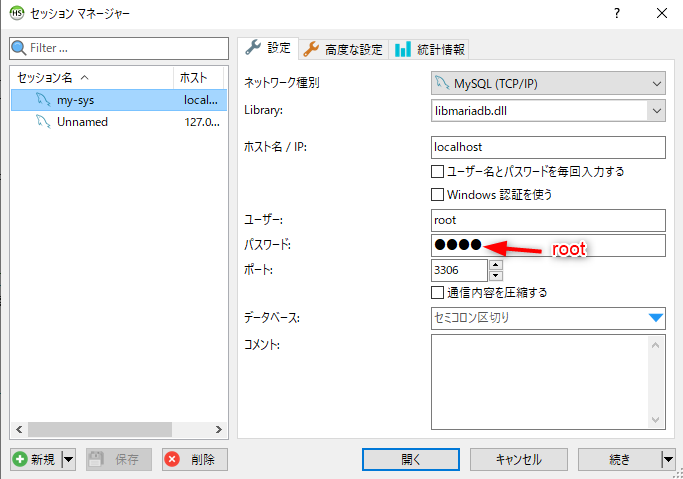

| コマンド | 説明 |
|---|---|
| $ docker-compose up -d --build |
docker-composeで最も基本的なコマンド。 docker-compose.ymlの情報を元にDockerイメージのインストールやDockerコンテナの起動を行う。 Dockerコンテナの起動はstartコマンドでもできるが、 docker-compose.ymlを書き換えたときはこちらのupコマンドを実行すること。 |
| $ docker-compose stop |
Dockerコンテナを停止状態にする。 「$ docker-compose start」コマンドで再開することができる。 |
| $ docker-compose start | 停止中のDockerコンテナを再開する。 |
| $ docker exec -it コンテナ名 bash |
コンテナにアタッチしてコンテナ内にアクセスする。$ winpty docker exec -it xxx_php_1 bash |
Docker for Windowsの設定注意
$ cd ~/bin/docker-compose $ curl -L https://github.com/docker/compose/releases/download/1.25.0-rc4/docker-compose-`uname -s`-`uname -m` -o bin/docker-compose chmod +x bin/docker-compose
$ docker-compose --version
- ルート（C:\Users\ユーザー名） - git ← マウントするディレクトリ（apacheで言うhtdocsに相当する場所） - docker_demo ← docker制御用のプロジェクト - docker-compose.yml - php.ini - php - Dockerfile - animal ←その他プロジェクト - neko.html ←サンプルHTML
docker-compose.yml
version: '3'
services:
php:
build: ./php
volumes:
- ../:/var/www/html
- ./php.ini:/usr/local/etc/php/php.ini
ports:
- 80:80
mysql:
image: mysql:5.7
volumes:
- ./mysql:/var/lib/mysql
ports:
- 3306:3306
environment:
- MYSQL_ROOT_PASSWORD=root
- DB_SOCKET=/var/run/mysqld/mysqld.sock
- MYSQL_DATABASE=cake_demo
- MYSQL_USER=test
- MYSQL_PASSWORD=test
phpmyadmin:
image: phpmyadmin/phpmyadmin
environment:
- PMA_ARBITRARY=1
- PMA_HOST=mysql
- PMA_USER=root
- PMA_PASSWORD=root
links:
- mysql
ports:
- 8088:80
volumes:
- ./phpmyadmin/sessions:/sessions
Dockerfile
FROM php:7.4.13-apache-buster
RUN apt-get update \
&& docker-php-ext-install pdo_mysql
FROMの部分にはイメージ名を指定する。php.ini
memory_limit = 256M post_max_size = 256M upload_max_filesize = 64M [Date] date.timezone = "Asia/Tokyo" [mbstring] mbstring.internal_encoding = "UTF-8" mbstring.language = "Japanese"
起動
docker-compose.ymlを元にイメージのインストールおよびコンテナを起動する。$ cd ~/git/docker_demo $ docker-compose up -d --build
サンプルWEBページを動かす
以下のようなURLでDockerコンテナ内のWEBページにアクセス可能http://localhost/animal/neko.php
phpmyadminを動かす
phpmyadminのURLhttp://localhost:8088
DB管理ツールへの設定例→HeidiSQLの場合
PHPでDB接続設定する例（PDOの例）
$host = 'docker_demo_mysql_1'; // Dockerコンテナ名を指定
$dbname = 'cake_demo';
$port = '3306';
$charset = 'utf8mb4';
$dsn = "mysql:dbname={$dbname};host={$host};port={$port};charset={$charset};";
$user = 'root';
$password = 'root';
global $dao;
try {
$dao = new PDO($dsn, $user, $password);
echo "DB接続成功<br>";
} catch (PDOException $e) {
echo "DB接続失敗<br> " . $e->getMessage() . "¥n";
exit();
}
php.iniを変更した場合
php.iniを変更した場合、 「docker-compose stop」コマンドでコンテナ群を一旦停止させたあと、 「docker-compose up -d --build」コマンドでコンテナを再起動すること。コンテナ一覧を確認する
dockerのコマンドでコンテナ一覧を確認できる。各コンテナはdockerコマンドで操作可能。$ docker ps CONTAINER ID IMAGE COMMAND CREATED STATUS PORTS NAMES 576943301b4d php:7.4.13-apache-buster "docker-php-entrypoi…" 12 hours ago Up 54 minutes 0.0.0.0:80->80/tcp docker_demo_php_1 e7aaa1afb467 phpmyadmin/phpmyadmin "/docker-entrypoint.…" 35 hours ago Up 54 minutes 0.0.0.0:3306->80/tcp docker_demo_phpmyadmin_1 7cbf3ac6b56f mysql:5.7 "docker-entrypoint.s…" 35 hours ago Up 54 minutes 3306/tcp, 33060/tcp docker_demo_mysql_1
GDをインストール
PHPのGD（画像処理関連ライブラリ）はインストールされていないのでインストールする。